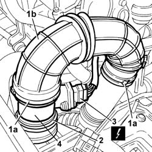
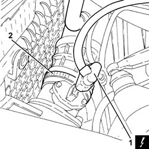
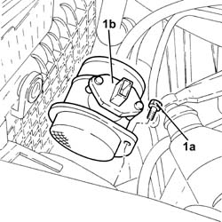

1060G10 flow meter - r r
- Path
- Procedures > 10 ENGINE > 1060 DIESEL FUEL INJECTION > 1060G pressure pump electric control > 1060G10 flow meter - r r
- Kind
- repair procedure (removal / refitting; the operation number is the code)
- Applies to
- engines: 1.9 JTD 8V, 1.9 JTD 16V; all production periods
- Interactive page
- https://sloeber94.github.io/elrnDB-a147/en/#/3025040
Applies to: engines: 1.9 JTD 8V; all production periods
 Removing
Removing
 Refitting
Refitting1. Undo collar (1a) and remove the sleeve (1b) from air cleaner to flow meter.
2. Disconnect the air flow meter from the underlying sleeve.
3. Disconnect the electrical connection from the air flow meter.
 | Name | Connector |
|---|---|---|
3 | Air flow meter |
4. Remove the air flow meter.

Applies to: engines: 1.9 JTD 8V; all production periods
Refitting
RemovingFit the air flow meter and connect the electrical connection.
| Name | Connector |
|---|---|---|
- | Air flow meter |
Connect the sleeve to the air flow meter.
Fit the connection sleeve between air cleaner and flow meter.
Do up the collars securing the pipe to the flow meter and the rigid air intake pipe to the turbo.
Applies to: engines: 1.9 JTD 16V; all production periods
Removing
RefittingProceed with removal 1016A10 sound-proofing cover - r + r .
Proceed with removal 5530B10 battery - r+r .
Proceed with removal 5530B52 Battery DRIP TRAY/SUPPORT - R.R. .
1. Disconnect the electrical connection from the air flow meter.
| Name | Connector |
|---|---|---|
1 | Air flow meter |
2. Loosen the band and disconnect the corrugated hose from the air flow meter.

Applies to: engines: 1.9 JTD 16V; all production periods
1. Undo the bolts (1a) and remove the air flow meter (1b) from the air filter.

Applies to: engines: 1.9 JTD 16V; all production periods
Refitting
RemovingPlace the air flow meter in its housing on the air filter and secure it using the bolts.
Connect the corrugated hose to the air flow meter and tighten the band.
Connect the electrical connection to the air flow meter.
Proceed with refitting 5530B52 Battery DRIP TRAY/SUPPORT - R.R. .
Proceed with refitting 5530B10 battery - r+r .
Proceed with refitting 1016A10 sound-proofing cover - r + r .
Topics linked from this page (4)
- 1016A10 sound-proofing cover - r + r
- 5530B10 battery - r+r
- 5530B52 Battery DRIP TRAY/SUPPORT - R.R.
- K41 Air flow meter ( ENGINE )